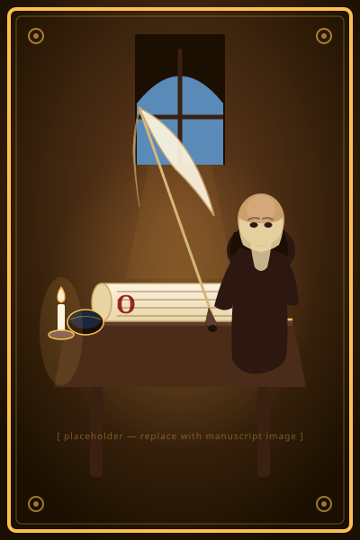
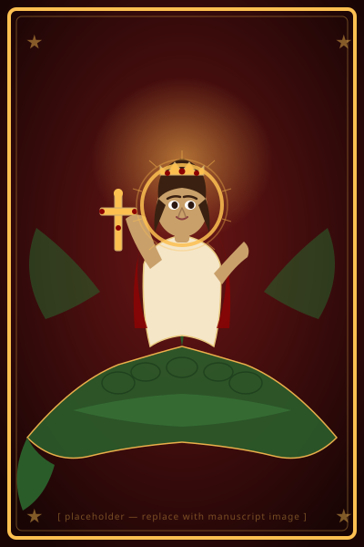

Lives
Composed in French between 880 and 1500 CE, approximately 280 surviving stories about Christian saints invite us to reconsider our ideas about medieval spirituality, gender, family dynamics, and more…

Saints
Medieval French authors composed stories about 140 Christian saints, ranging from early martyrs like St Catherine and St George to recent figures like St Thomas Becket and St Elisabeth of Hungary…
Manuscripts
The 630 medieval manuscripts preserving saints' Lives in French include some of the most expensive, brilliantly illuminated books of the Middle Ages and plain slips of parchment…